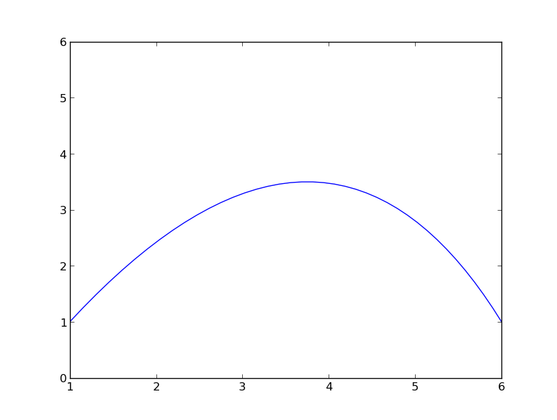

A Bezier curve is a smooth curve used in graphics to model fonts and other drawings. What makes bezier curves interesting is that by controlling a few parameters you can control the curvature of the line.
Think of a line a linear curve. Let the end points of the line (segment) be A and B. When you draw a line segment between A and B, you can imagine it as a small dot, moving in a Straight line from A to B.
Now introduce a new point C. Let the point travel from A to C and then to B. If the point does not travel in a straight line, but rather approaches C before changing direction to B, then we get a smooth curve. By controlling the distance of C to A and B, you can get a shallow or a deep curve.
A better way to think of C is to to think the line between A and B as a stretched rubber string. If you pull at some point on the string say X, you get a curve. By varying the point at which you pull the string, you get different curves. C is the anchor from which your finger extends to pull at X. By changing C, you change X which pulls the line at differnt places thus creating differnt curves.
C
C C
A _____x_______X_____X____ B
A Bezier curve is a parametric curve, i.e the co-ordinates of the points depend on some parameter. As the parameter varies, the co-ordinate varies.
Let's think of a straight line as a mixture of the points A and B (1A + 0B) . at A, the contribution of B is 0. At B, vice versa. The mid-point of the line is represented as 0.5 * A + 0.5 * B. Similary we can represent any point in the line as (1-t) * A + t * B . Where t lies between [0.0, 1.0] ( an affine combination, if I remember linear algebra).
Now, the simplest bezier curve is a quadratic curve, meaning that there is a t^2 term involved in it. How do we create a curve with 3 points? Imagine 2 lines AC and BC. Let E be a point traveling on AC and F be a point traveling on BC. For each t between 0.0 and 1.0 , plot E as sA + tC and F as sc+tB where s = 1-t. Now let's take a point P as traveling along EF. Apply t to P to calculate the co-ordinates of P as sE+tF. So
E = sA+tC
F = sC+tB
p = sE+tF
p = s(sA+tC) + t(sC+tB)
p = s^2A + 2*s*t*C + t^2B
s = (1-t)
Bezier curves are wonderfully explained in this presentation from GDC. You can find it here
I wrote a simple python program to create a bezier curve using pyplot. You can view the code below
import matplotlib
import numpy as np
import matplotlib.pyplot as plt
def bezier(x,y,z,num_points=20):
points = []
vals = np.linspace(0,1,num_points)
for val in vals:
s = 1-val
t = val
px = s**2 * x[0] + 2*s*t*y[0] + t**2 * z[0]
py = s**2 * x[1] + 2*s*t*y[1] + t**2 * z[1]
points.append((px,py))
return points
if __name__ == '__main__':
points = bezier((1,1), (4,6), (6,1), 40)
plt.plot([p[0] for p in points], [p[1] for p in points])
plt.ylim(0.0,6.0)
plt.show()
This is the curve as plotted by pyplot. Icrease the number of num_points to get smoother curves 